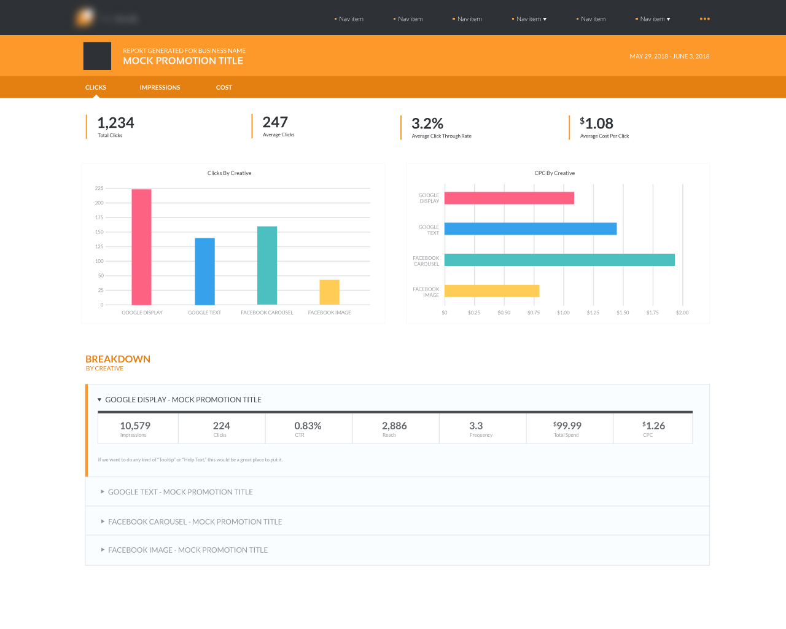

I like to create stuff.

UI Design
Built as part of a marketing initiative, this application required a user-friendly page for displaying aggregate data about a number of advertising campaigns run in tandem. This part of the application needed to present information in a meaningful way to the end user, while ensuring no data was outright obscured.
My solution was to break down the gathered data into three, more digestible categories: clicks, impressions, and cost. Although this image captures only one view, each category displays the data relevant to it, and compares that data in a way that allows us to generate a set of descriptive charts and graphs.
View image Next Sample

Dynamic Email Marketing
These emails consist of completely automated, dynamically-populated content, designed within product branding guidelines, which need to be sent daily to a customerbase numbering in the thousands. These designs had to accommodate a highly variable set of data, while still delivering value to their consumers and remaining compatible across a wide swath of email clients.
View image Next Sample